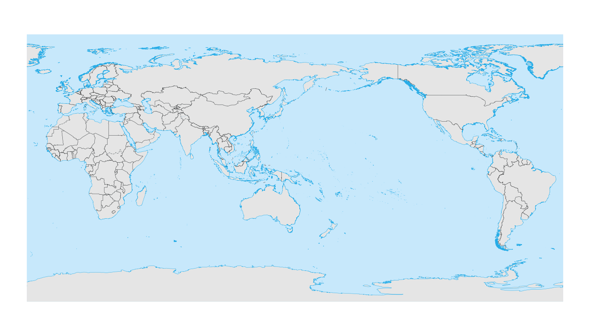
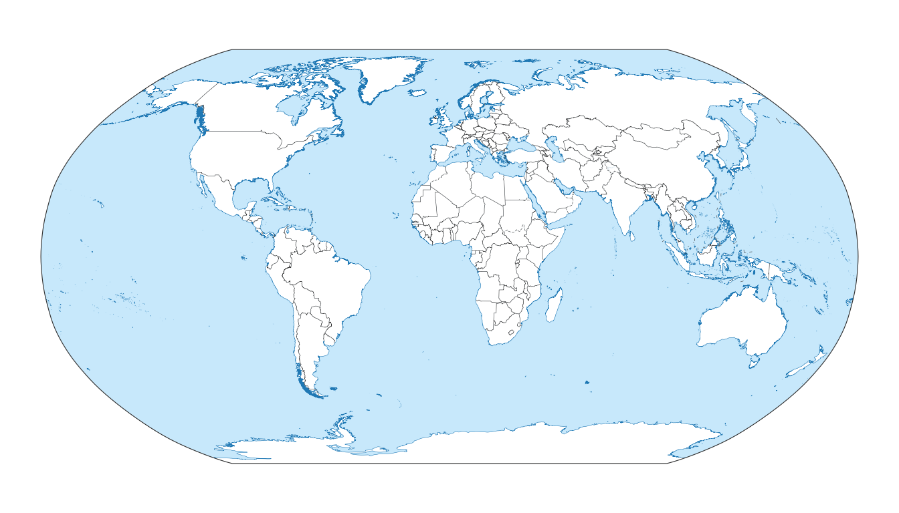

World map overview with geom_world()
Source:vignettes/World_Map_Overview.Rmd
World_Map_Overview.Rmd1. Introduction
geom_world() provides a convenient global basemap for
ggplot2. It uses bundled country polygons, coastlines and
political boundaries, and handles antimeridian splitting and CRS
transformation internally.
This vignette shows a few typical use cases:
- a default WGS84 world map,
- a projected map (Robinson),
- a map centred on 150°E,
- highlighting one country using the
filterargument,
- basic styling options (ocean, frame, boundaries).
2. A basic world map in WGS84
If you call geom_world() without arguments, it draws the
world in a geographic CRS (WGS84, EPSG:4326). For simple maps you can
combine it with theme_void():
ggplot() +
geom_world() +
theme_void()
You can still use coord_sf() explicitly if you want to
be very clear about the CRS:
ggplot() +
geom_world(crs = "+proj=longlat +datum=WGS84") +
coord_sf(crs = "+proj=longlat +datum=WGS84") +
theme_void()
3. Robinson projection
geom_world() can work with any projection that
sf understands. Here we use the Robinson projection with
its default central meridian:
crs_robin <- "+proj=robin +datum=WGS84"
ggplot() +
geom_world(crs = crs_robin) +
coord_sf(crs = crs_robin) +
theme_void()
#> Spherical geometry (s2) switched off
#> Spherical geometry (s2) switched on
To centre the map at 150°E, simply add lon_0 = 150 to
the CRS:
crs_robin_150 <- "+proj=robin +lon_0=150 +datum=WGS84"
ggplot() +
geom_world(crs = crs_robin_150) +
coord_sf(crs = crs_robin_150) +
theme_void()
#> Spherical geometry (s2) switched off
#> Spherical geometry (s2) switched on
geom_world() will automatically handle antimeridian
splitting based on the central meridian in the CRS.
4. Geographic CRS with a shifted central meridian
You can also use a geographic CRS with a non-zero lon_0.
In this case the map is still in degrees, but longitudes are wrapped
around the specified central meridian:
crs_wgs84_150 <- "+proj=longlat +datum=WGS84 +lon_0=150"
ggplot() +
geom_world(crs = crs_wgs84_150) +
coord_sf(crs = crs_wgs84_150) +
theme_void()
This is useful when you want to avoid cutting a specific region at the edge of the map.
5. Highlighting a single country
When the filter argument is non-NULL,
geom_world() only draws the countries matching the filter,
and omits the ocean, boundaries and frame. This makes it easy to
highlight one country on top of a global basemap.
The example below draws a neutral world, then overlays China (using
the "SOC" code "CHN") in a different
colour:
ggplot() +
# base world
geom_world(
country_fill = "white",
show_frame = TRUE
) +
# highlight China
geom_world(
filter_attribute = "SOC",
filter = "CHN",
country_fill = "red"
) +
theme_void()
You can supply multiple codes to filter to highlight a
group of countries:
focus_countries <- c("CHN", "JPN", "KOR")
ggplot() +
geom_world(
country_fill = "grey95",
show_frame = TRUE
) +
geom_world(
filter_attribute = "SOC",
filter = focus_countries,
country_fill = "#f57f17"
) +
theme_void()
6. Styling options: ocean, frame and boundaries
geom_world() exposes several parameters for styling the
ocean background, outer frame and political boundaries. For a slightly
more “cartographic” style:
crs_robin <- "+proj=robin +datum=WGS84"
ggplot() +
geom_world(
crs = crs_robin,
ocean_fill = "#c7e8fb",
country_fill = "white",
coastline_color = "#1f78b4",
international_boundary_color = "grey20",
regional_boundary_color = "grey40",
show_frame = TRUE,
frame_color = "grey20",
frame_size = 0.2
) +
coord_sf(crs = crs_robin) +
theme_void()
#> Spherical geometry (s2) switched off
#> Spherical geometry (s2) switched on
For quick exploratory maps you can keep the defaults; when preparing figures for publication, the arguments above give you control over colour, line width and line style of each component.
7. Next steps
This vignette focused on the core ideas:
- using
geom_world()as a drop-in global basemap,
- changing the projection via the
crsargument,
- shifting the central meridian with
lon_0,
- highlighting selected countries with the
filtermechanism,
- adjusting basic styling for ocean, frame and boundaries.
In practice you will usually combine geom_world() with
additional layers (points, polygons, gridded data) and other
ggmapcn tools such as
annotation_graticule(), annotation_scalebar()
and annotation_compass() for more complete cartographic
layouts.